The Janusz Korczak Association Australia wants to make sure your voices and ideas are heard and seen.
Just because you are young doesn’t mean you don’t have ideas and can’t speak about things you are thinking about. Even if you are younger than 18 you have the right to freedom of expression; to share what you learn, think and feel. Freedom to find out more and share ideas too, however you choose, by talking, writing or in print, art, or any other way unless it harms other people.
The Janusz Korczak Association Australia invites you to share your thoughts, ideas, learning and feelings on this website too.
As Korczak said,
"Children are not the people of tomorrow, but people today. They are entitled to be taken seriously. They have a right to be treated by adults with tenderness and respect, as equals. They should be allowed to grow into whoever they were meant to be - The unknown person inside each of them is the hope for the future."
Janusz Korczak
To View Submissions Click Here
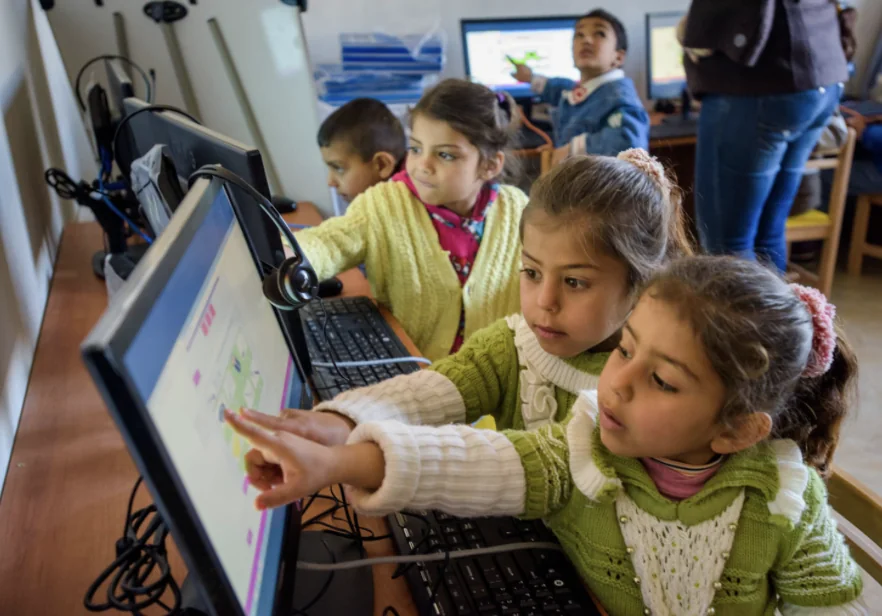
Sometimes young people are unhappy because others use technology to send mean messages. That’s so wrong and awful! Show people you’re much better than that. Use technology to send kind messages and share happiness.
What are different ways you can use technology to share happiness?
If you have ideas about how technology could help for good, please share your ideas.
What would help you know and understand when technology is not for good? If you have found any way, please share this. If you don’t know, please ask questions. Even grown ups don't always know for sure when technology is a scam or not for good or not safe. Please don’t be shy or afraid to ask questions. Very serious experienced tech experts who I trust will answer your questions but won’t put names next to the questions you share when the answer is given.
Don’t be worried or upset if you can’t use technology like others of similar age do. There are so many reasons.
Not everyone has much access to digital technology Not everyone has much access to the internet Digital technology is changing rapidly and almost impossible for many people to keep up with, but many people, particularly younger people find the changes exciting and some keep up with more changes than others. Some people find digital technology difficult and it takes them a long time to learn even what seems basic to most others. There’s nothing wrong with these people. Everyone learns differently and at a different pace and because they feel stupi it makes their learning even more difficult. Kindness, empathy and caring can help them a lot. Imagine what a difference you could make if someone you know is having tech difficulties you told them about something you found difficult to learn and now are pretty good at it because kind people who what they now could do helped you; and you really like digital technology and would like to help you learn more about this and how it could help you too.
Together you might find different ways to help people not comfortable with technology and both be able to share these ways to help more people. We are going to have a special section on our website about Happiness. Please send your technology ideas and questions to: kdnolan@proton.com
P.S. You could make a digital happiness book too!
Please remember this is your website too and when you send responses to Activities that are on your website, you are sharing your thoughts and ideas with others. It’s all about your right to equality and justice and the right to have a say about things that are about or concern you. Janusz Korcak’s work and actions are the foundation of the Convention on the Rights of the Child. Child meaning people 18 years old and younger.
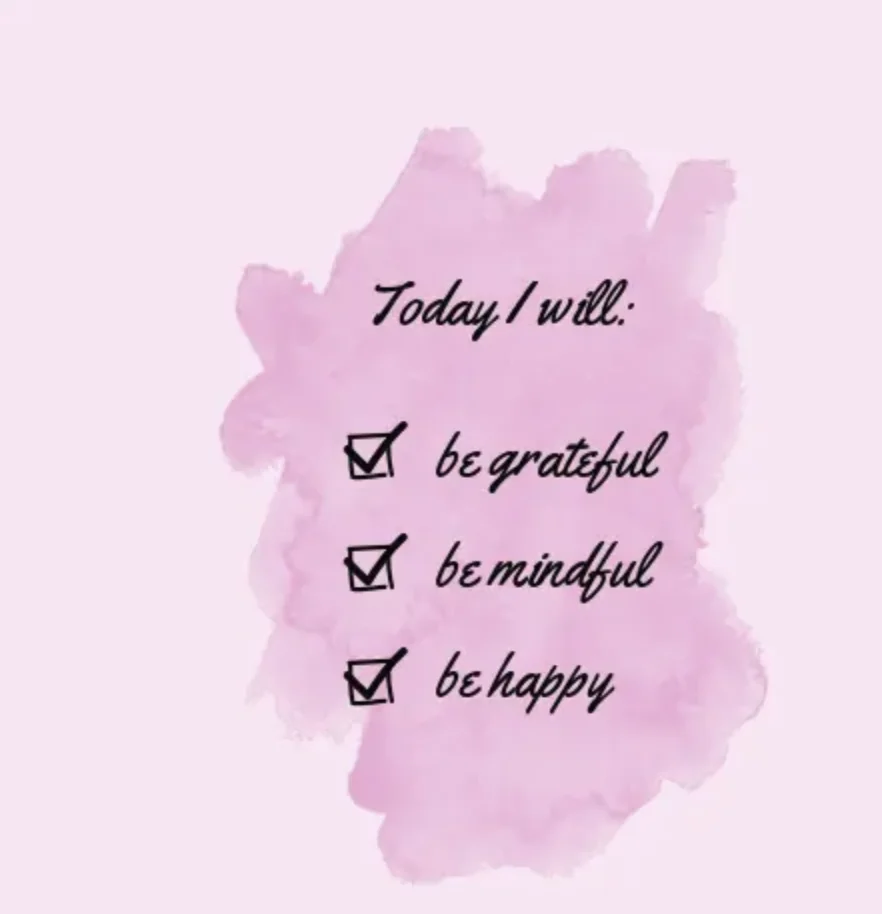
Caring, Sharing, Kindness and Using Technology for Good.
"Let your smile change the world, don't let the world change your smile."
Start your day knowing you being happy not only feels good, seeing you happy can help other people feel happy too! Believe in yourself and know you can do so much to be who you really are and be happy with yourself and being kind to others helps them be kind to you too! Think about all the good things in your life and start the day smiling and think of funny jokes that other people will like and smile and laugh at too when you share those funny jokes.
Please have a look at these questions and think about them:
Use a scrapbook to make your own Happy Book,paint or draw your own happy picture and paste it on the cover of your happy book and each night before you go to bed write or draw something that made you happy that day. If sometimes you have a bad day, write what you wish will make you happy another day.
In your Happy Book you can also write about fun times, paste photos that make you smile, have a page of jokes that make you laugh and make up some of your own jokes too. You can paint or draw pictures there too. It’s your Happy Book, putting whatever you choose in it makes it your very own Happy Book.
When do you feel happy?
What can you do with your family to celebrate International World Happiness Day?
Do you have a happy space? Why is it a happy space for you?
Where are happy spaces for you?
How do you feel when someone is kind to you?
How can you be kind to others?
What can you do with your family to celebrate International World Happiness Day?
If you have friends who don’t live near you, how can you send happy and kind messages to them? How many ways can you do this without using a computer /internet?
How can you make your bedroom a happier space for you?
Would you and some of your friends like to speak with your teacher about World Happiness Day and suggest that together you could plan a Happiness Day at school?
Create a fun poem or a play about happiness
…………………
Like last year on our website for International Happiness Day 2025, there were quotes. This year there are some new ones with some activities this time.
“Dare to dream… Something will come of it.” Janusz Korczak Close your eyes and dream of a place where you would live and go to the School or Care Centre, Kindergarten or Early Learning Centre where you go most days;and wish everything in your dream was real. In your dream it didn’t matter if you were tall or short, couldn’t read, have a different color skin, didn’t do well in tests or couldn’t kick a ball far; eat different foods and celebrate different holidays, were really great at lots of things, didn’t have cool clothes and never had your own party, could play beautiful music on the piano, cry a lot, great at maths, love quiet times, keep forgetting things, don’t have a brother or sister or needed a wheelchair. Yet in this dream no one hurt anyone else, you always hadd someone to play with and all smiled and laughed a lot and had fun. After dreaming and imagining a lot about this place, Give this place a name and paint a picture of this place, or write a story about this place with you going there. What would you paint in the picture? What would you see when in your dream you went to this place? What do you remember most of all about this place? What is really important to you about this place? Please share your dream painting and or story.
…..
“Nothing without joy.” Loris Malaguzzi. Imagine what it would be like if you could add some fun, joy, to your day when things have been hard or you’re feeling very sad. All have difficult times and sad times and sometimes things just seem to go wrong. But if you have favourite toys to cuddle or play with, games you like, make things that are new and different, see friends who are really good at cheering you up and people in your life you trust and feel safe with, they can help you feel better.You can also remember good things that make you happy and bring you happiness, There will be things that are special to you that bring you joy. Make a list of things that make you happy and and look at it lots of times. Believe in yourself that you can help yourself feel better too and that you can keep bringing more joy into your life and help other people be happier too.
…………….
“Authentic happiness derives from raising the bar for yourself, not rating yourself against others.” Martin E.P. Seligman, Stop thinking that you are not good enough because you’re not as good as others you know. Nobody is good at everything and you are good at things others can’t do at all, or not very well. You are so good just the way you are and there is no one exactly like you anywhere in the world, no matter how hard they might try if they want to be like you. You are the only you! Be happy just because you are you and believe you can always learn new things and get better doing tricky things just by trying again and again. Everyone has sad days, but that makes the happier days even more special. Be happy!
Please send your ideas, photos, drawings, videos, stories, quotes about any of these or any other things about happiness to me, karin.morrison@gmail.com Thank you very much, Karin.
World Children’s Day is a time to remind grownups and children that all young people have rights. Not just on World Children’s Day, but every day!
If you haven’t heard about children’s rights, have a look on the page about these rights on this website. You can find it quickly by clicking here!
You can also ask people who listen to you to tell you what children’s rights are and why they are important for you to know.
If there aren’t any copies of the Convention on the Rights of the Child at your school, speak to your school teacher or Principal about this and suggest they place some on your school’s walls. Or ask your parents to do this
There is also an updated section to go with the Convention on the Rights of the Child. You can also see this on the section with the Convention on the rights of the Child
What can you do to help more people know that all young people in Australia should have these rights?
Make a list of people you trust who you can talk to if you don’t feel safe and know they will believe you and help you.
When you look at the section with the Convention of the Rights of the Child
If there aren’t people like this in your life you can go to a police station and or speak with your best friend and his or the mother or father of your best write a letter, email or call a doctor, nurse.
Whether you are in you first year of school, a teenager, 3 years old, 17 years old,
you have the right to all of the rights of the Children’s Rights Convention.
You have the right for help and protection when you need it.
You have the right to food, clothes and a safe place to live.
Regardless of abilities or disabilities you have equal rights too!
You have the right to play and relax too.
You have the right to express your own opinions and your ideas.
You have the right to your own religion, your own culture
Whoever you are, you have the right to be safe!
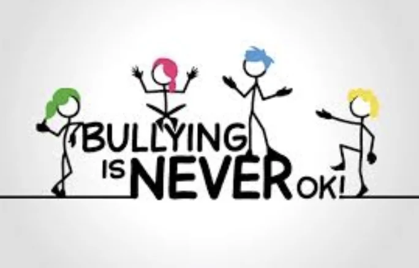
No one should be bullied just because of who they are!
Whether you are 3 or 18 years old, or any other age, whatever colour your skin, whatever marks you get in tests or exams, whatever religion your family is, whether or not you are in a wheelchair or are different in other ways from many people around you, whether you live in a beautiful home or live in a very small cold place, whether too often you are sad, upset or angry you should not be bullied! Too often people may make you think you’re not good enough. They are just proving they don’t know you very well at all. Everyone is different. How much better it is than everyone being exactly the same as everyone else. Would there ever be new ideas and fun in playing games when everyone has different skills and ways of doing things but all doing the same as everyone else?
Differences should be valued, not be a reason for bullying.
You are absolutely good enough the way you are!
You have the right to live safely and freely as the person you really are. This website is named after a man, Janusz Korczak who lived, wrote and acted for all children to be equal and the following are his words ” Children are not the people of tomorrow, but people today. They are entitled to be taken seriously. They have a right to be treated by adults with tenderness and respect, as equals. They should be allowed to grow into whoever they were meant to be - The unknown person inside each of them is the hope for the future.”
For more information about the rights you are entitled to, please look at the Children’s Rights page here
SPEAK UP
When you are bullied, tell someone about it! It could be a teacher, a parent, a friend. Someone who will listen to you, take you seriously and respect you.
If you see someone being bullied, help that person if you can or quickly get or ask for help. Make sure someone else knows about what you have seen
Know that you can help stop bullying. If you together with others and do things to stop bullying, that’s another way of speaking up Speaking up is a way of talking out loud, making your thoughts and ideas heard or seen through words spoken, written, on videos or posters, drawings and actions -things that you do.
Be bold!
You could make:
A short video
Create anti-bullying posters and place them in schools, libraries and other places where people would see them
Make up some sayings of your own.
Kindness
Be kind! You’re probably kind lots of times already and know how happy it makes you when you are kind to people. Maybe there are more ways and different ways you can show kindness too. People see and hear what you do and can also learn just by seeing you being kind what a difference it can make and by being kind you are actually spreading kindness.
Help others who are bullied any ways you can and remember they will probably keep hurting for a long time.
Please share here any of what you create so people near and far away can hear or see your words, posters, drawings or short videos of ways to stop bullying or different ways of being kind.
You and Others
Bullies aren’t always bad people. Maybe something horrible has happened in their lives and they hurt so much they don't think about what they are doing.
Maybe no one has ever been kind to them before. Have they been bullied so much they think that’s what you do when you can't get things right?
Think about how things keep changing, not just for you. You can make people try and understand others better and help them understand you better too. Being kind to each other always helps.
You are human and will get angry and sometimes hurt, but be as brave as you can and try very hard not to bully anyone else. Try hard to keep calm, take deep breaths, move away from horrible situations that upset you when you can, write down your feelings and what happened and think about what else you could do to help yourself when you’re not sure what to do. Everyone has bad times. Think about all the good things and people in your life who make you happy too.
Who can you tell things to without them judging you and making you feel bad or stupid even though you really don’t want to tell them some things? Maybe try talking to someone you think you can trust who won’t tell anyone else what you tell them unless you both decide it’s okay to tell someone who could help.
d. This part is private, just for you. Make a list of people you trust in your life and keep that safely on paper, in your mind and or your mobile if you have one. This activity is not for sharing as it is likely to have names on it, but important for you to have. Some people don’t have lots of people they can trust, but even if you only have a few, they are very important for you and you know you can talk to them about all sorts of things you won’t tell many people and feel safe.
Bullying No Way: National week of action can lead to making actions every day with being bold, speaking up and being kind. Doing this can help there be less bullying in the world.
By doing this, you are also following Korczak’s words, “One should not leave the world as it is”
With your words and actions, know you can make a positive difference, first for you and your friends and together and over time you can show that it is possible not to leave the world as it is!
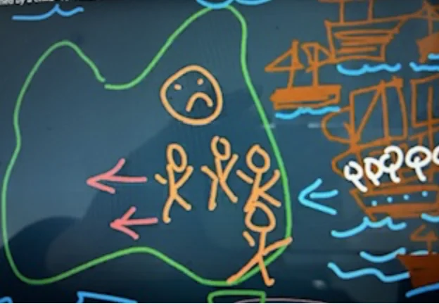
Theme: "Bridging Now to Next"
What can we do now to help us become friends with people different to us that can help us make a bridge to more reconciliation.
In the first video, young people are talking to you about what happened when new people came to Australia and when the only people living here were First Nations people.
Have a look at it;
https://youtu.be/7Z-3Z_td_Ks
Please share HERE any of the following
How you can share respect and kindness to our First people, the animals, their culture and land?
How can you find out more about our First Nations people?
What are your favourite stories about our First Nations people?
Does this next video give you ideas about how you can help reconciliation too?
https://youtu.be/YWXYgLR_SaU
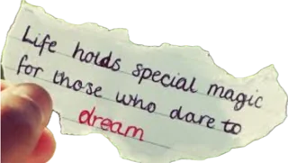
⁃ What is really important to you? Make your own list.
⁃ We dream about lots of things. Think about what would be needed for a place where you would feel safe, comfortable as your true self and the courage to speak up about your own ideas and what could be done for moving forward to a place where people value differences and get on much better, working and learning together for a better future for all. Our world is constantly changing. Young people can have a role in what changes are needed and how to help them happen.
Janusz Korczak had clear thoughts about this too.
“Dare to dream. Something will come of it.” Korczak, J.
⁃ Dare to Dream! Dream about this place you have been thinking about. You could write about it, make a short video describing it and how or why it would be a dream place or draw or paint it.
Please share here you list of what’s important to you and your dreams. By sharing we can all learn from each other and think about and decide on steps we could take, one at a time, to see what will come of our dreams and help make dreams come true. HERE
“One should not leave the world as it is.” Korczak, J.
With your help, together we can change it for the better!
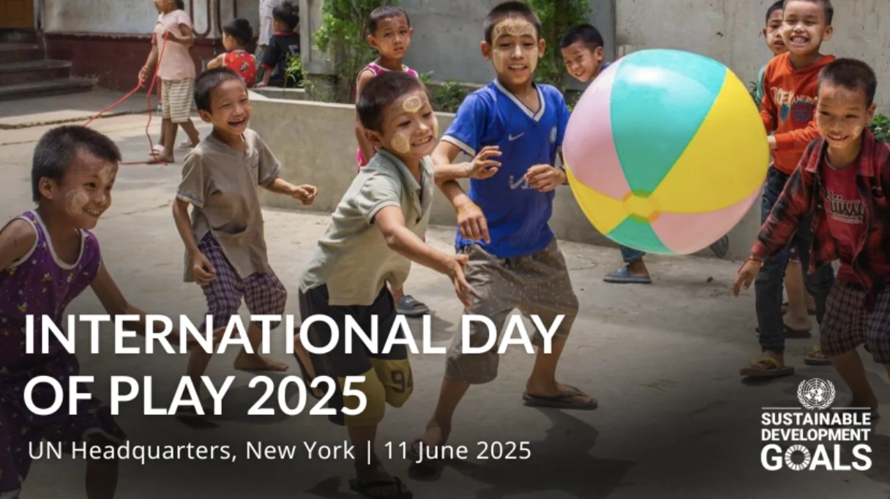
The International Day of Play is there to remind everybody that play is very important. Not just on the International Day of Play.
The theme, “Choose Play Every Day” is telling people that. You can help your friends, teachers and other grown ups to remember that too!
Young people are the best experts about play! Make sure you help people understand that play is very important for everybody. Here are some ideas, but your ideas are wanted too!
-Tell people about International Day of --Play and remind them that play is very important for everybody
-Make posters showing different ways of playing, for example, games, sport, drawing, dressing up. Most of all, your favourite ways of playing.
-Create a new game and play it with others.
-Play with things you can find in parks and gardens. For example, ;eaves, seeds, pebbles, twigs. What else can you find outside and add to your games?
-Make up your own stories about play.
-How can you use things like boxes, paper, straws, string, containers, material scraps and other things that might get thrown away to make something new and or play with in different ways.
These are only some ideas. What are your favourite ways to play?
If you would ;like to share your ideas about play or send in some thoughts, drawings or pictures of play, please send here: PLAY :)
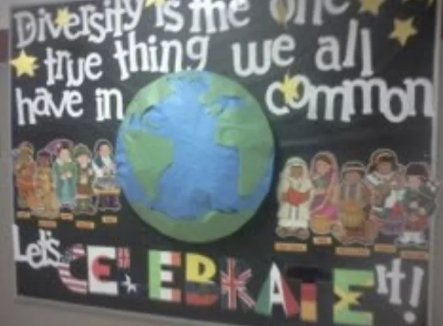
We are all equal, yet we are all different!
Imagine if we were all the same. Did everything the same way as everyone else, only ate the same flavour ice cream, all had the same coloured skin, the only game we played was football, only laughed at the same jokes……..? What would life be like?
We would never have television or computers if everyone only had the same ideas. Would there be different stories and games if we all only talked about and wanted to do the same things? Would we ever have grand finals or Olympic Games if everyone was the same? Would there be medicines to prevent diseases like COVID if there were no scientists exploring different ways of solving problems because everyone had to do the same thing?
Being different and being equal mean that no matter who you are, you are important just the way you are, and being different and doing things differently makes life more interesting and fun and new ways can be found to help everyone! The only thing we need to remember is to respect and value differences and don’t hurt anyone and that way we can all have fun together, learn from one another, help each other and be true to ourselves.
SOME Suggestions to help Everyone Belong as who they really are:
- Stand up for what you believe is right! If you are treated badly just because you are different it is wrong. Tell an adult you know will listen to you about what has happened.
- Encourage or start discussions and debates about fairness
- Share ideas that make you feel happy and feel like you belong
- If someone looks lonely or sad, try and talk with them or invite them to play with you
- Make up games about similarities and differences
- Know or find spaces where you can be and feel safe, whoever you are
- Create posters giving examples of belonging, maybe with different people all together happily, words or sayings, different shapes but all the same colour…..
- Imagine you’ve been nominated for a leadership position to be one of the following: a sports captain, a Prime Minister, a school Principal, a leader of a university, Young Australian of the Year, a President, class captain. What would you say and do to convince people that your decisions and actions would enable all to belong and be their best selves?
- With others, create and put on a play about bullying and how to help angry and upset people, and suggest ways to help themselves and each other without hurting others.
- Share the names of stories, books about racism, fairness, bullying, stereotypes, justice, equality ….. that you remember or think about because you connected with them in one way or another.
Please share your own responses to any of these ideas and also please feel free to add more ways to stop Racial Discrimination here
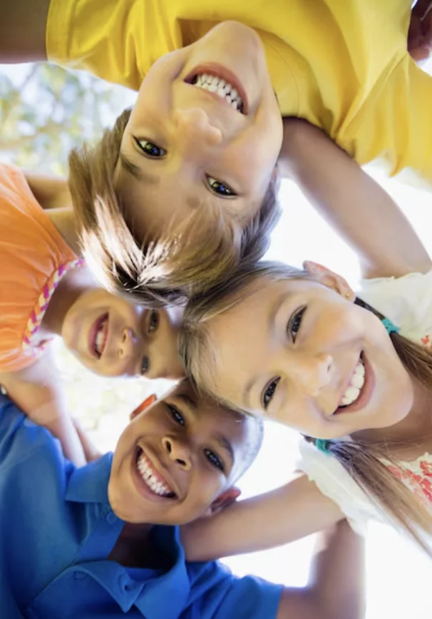
Ways to Celebrate Happiness
- Keep a journal and each night write in it something that made you smile that day
- Do something that makes you incredibly happy
- Share positive messages at home, school, on social media
You can spread happiness by sharing your happiness, smiling at others and being kind. "Whoever is happy will make others happy." Anne Frank, The Diary of a Young Girl
- Play and celebrate the joy of freedom doing what you want to do
- Sing, laugh, listen to b beautiful music and dance
- Appreciate all the beautiful things in your life and express your gratitude about them.
- Arrange a happiness-themed event at home or at school
- Do something kind for someone else
- Spend time with your loved ones
- Find ways to make happier environments
- Volunteer for a local charity
- Reflect on what makes you happy
- Volunteer for a local charity
- Learn about happiness by reading books or watching documentaries
- Gratitude for the Little Things.
- Connect with others.
- Enjoy your curiosity and see what you discover
Think about some of these quotes about happiness:
“Remember, you’re the one who can fill the world with sunshine.” ― Snow White, Snow White and the Seven Dwarves
"Folks are usually about as happy as they make their minds up to be."
- Abraham Lincoln
“Now, think of the happiest things. It’s the same as having wings.” ― Peter Pan, Peter Pan
"For every minute you are angry you lose sixty seconds of happiness."
- Ralph Waldo Emerson
"The power of finding beauty in the humblest things makes home happy and life lovely."
- Louisa May Alcott
"Happiness is when what you think, what you say, and what you do are in harmony."
- Mahatma Gandhi
“If you have good thoughts, they will shine out of your face like sunbeams, and you will always look lovely.” – Roald Dahl
“Happiness is the overall experience of pleasure and meaning.” Tal Ben-Shahar
“There comes a day when you’re gonna look around and realize happiness is where you are.” ― Chief Tui, Moana
"Happiness is not something ready-made. It comes from your own actions."
- Dalai Lama XIV
“Authentic happiness derives from raising the bar for yourself, not rating yourself against others.” - Martin E.P.Seligman
"Count your age by friends, not years. Count your life by smiles, not tears."
- John Lennon
Did you connect with any quotes in particular?
Make up your own quote about happiness.
You can share your own thoughts, quotes about happiness or suggestions for celebrating International Happiness Day by sending in your drawings, photos, words or stories or short videos about happiness to: karin.morrison@gmail.com
We never know for sure what is going to happen tomorrow, but when things are important to us we think about them a lot and try to plan so things will work out the way we are hoping for. Some examples:
When we’re planning to go to the beach on the weekend we make sure we pack sunscreen and a hat plus any other sun protection so we can play on the sand and swim and have fun without worrying about sunburn and all we’ve been told about skin cancer in Australia.
The school year is soon coming to an end in Australia. Some children will be starting school next year. That’s a big step. If this is you, what are you hoping school will be like? Will any of your friends be going to the same school? How can you make new friends? Are you asking questions about school? Make sure you talk to people and tell them how you imagine school will be and what is important to you about going to school and what helps you when you are in a new and different place. For students in secondary school, are you worrying about your results and thinking about subjects for next year? Or have you just completed final exams and you have now finished being a school student? You've probably been thinking a lot about next year and making big decisions about what next you think is right for you. When you talk to people about this, make sure you tell them what is important to you and what needs to happen in your community/city/country, things that are not only good for you but are also probably good for everybody else too.
Surprise parties can be a lot of fun, but what do you need to do so it will be fun for everyone?
The world is changing a lot in so many ways that impact on people in so many places. The theme for this World Children’s Day is reassuring you that your thoughts, ideas, hopes, worries and dreams about the future are all important and if you and other young people don’t let others people older than you, organisations and decision makers know about these, how can you expect them to understand you and see how together you can make the future you and they will be so happy to see.
*What kind of world would you like to live in when you grow up?
*What do you like about the world today?
*What would you like to see changed in the world?
*How do you think you and/or together with others can make the future better for everyone?
*Imagine yourself twenty years from now , living in the world of your dreams that is not only great for you, but others are also very happy. What would you write in a letter to the younger you in 2024 and were thinking about your ideas, hopes and dreams for a better future, but the world wasn’t in a good way and you were worried about different things. Tell your younger self about what you have been doing to make what you were hoping for become real; what has changed around you and what it is about the world twenty years from now that makes you so pleased you talked about things that you valued and were important to you, and kept on talking till people listened, wrote and painted about these things to help people understand and met with others who had similar ideas and dreams and together you kept talking, trying things out and didn’t get upset when things didn’t work out, just kept trying.
Being a voice for the future can take many forms:
A video with you speaking and those who go to this website could listen to you.
Write what you want people to know about the future
Write a letter as if it was 2034 as suggested above
Paint or draw a picture of the future you would like to live in when you grow up
Plan a panel with you and other young people speaking about the future
With other young people, creat a mural of the future you all want that will benefit everyone.
Any other ways your voice and mind can share ideas, dreams and hopes for the future.
Please share your responses here
Sharing stories of your experiences with digitalization can show others what can be done. We all learn from each other. You can share your stories here with words and perhaps images or short videos also.
Any of the following questions is likely to remind you of something you would like to share:
How has digitalization:
Helped you solve problems?
Opened your eyes to new possibilities?
Enabled you to achieve goals ?
Sustainable Development Goals (SDGs)
Choose one of the Sustainable Development Goals from this chart and think about how digitalization could help to achieve that goal or steps that would enable positive progress to achieving this goal. You could also discuss and work on this with a group of friends. How do you see the role of youth in achieving Sustainable Development Goals?
Your ideas and experiences can be shared here
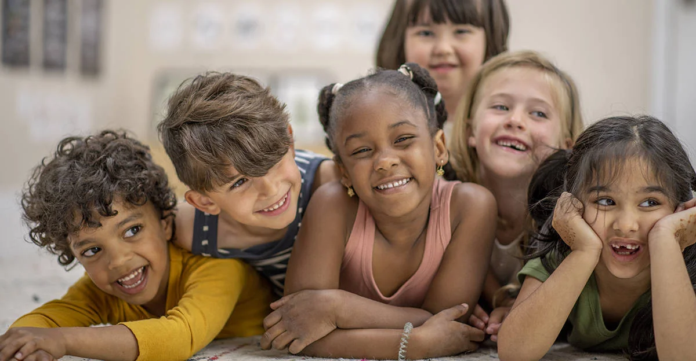
On World Children’s Day, a renewed Geneva Declaration on the Rights of the Child was launched!
Have you seen it anywhere? Have you heard anyone speak about it?
For it to become the way children live, people need to know about it , speak about it with people they know and decision makers too, to make sure that more children have these rights.
However old you are, you can make sure that more people learn about the 2024 Geneva Declaration on the Rights of the Child. Just by telling them that there is a new Declaration on Children’s Rights is a start. Of course you can say more about it. You have the right to do this! Number 3 on this Declaration confirms this:
For children to be listened to and have their opinions count in all decisions affecting them, thus recognising their fundamental rights to participate in shaping the communities they live in.
Following are some suggestions for helping more people know there is a 2024 Geneva Declaration on the Rights of the Child.
-Please read it or ask someone to read it to you. Ask questions, think about it.
Endorse it. Endorse means that you agree with it and would like to show your approval of this Declaration by adding your name to supporters of this new Declaration. Any person of any age who feels strongly about it and wants children to live with these rights can endorse it. That means if you do, your name goes to Geneva on a document supporting these rights and helps people see that even young people as far away as Australia care about children living their rights. If you are “under the age of 18, you hold a fundamental right: the right to express your opinions and Issue appeals that must be considered by adults and decision-makers.” If you would like to endorse it, please on a computer or device go to: declaration2024.org/I-am-a-child/
- Print copies of the 2024 Geneva Declaration on the Rights of the Child and take them, one at a time, to people and places that have anything to do with young people, for example to your local library, school, sports team, swimming lesson centre, friends, teachers, school principals, a police station, the member of Parliament in your area……. Wherever you think it should be.
Make posters about Children’s Rights and place them in different places.
- Create a news item with children trying to convince an adult who thinks people younger than 18 are too young to be making decisions about their lives. You could make a video of it and send it to the website here
- Write a few sentences or a story about children’s rights and why you think they are important.
-Draw pictures of children in different situations referring to children’s rights with a title or some words about it at the bottom of the picture.
-Make up songs about children’s rights.
-Create and perform a play about children’s rights
-Share your suggestions to help more people think about and do something to help more people know about children's rights
-Whatever else you think about for children’s rights.
-You are invited to send your thoughts, questions, ideas, stories, videos here…..
If more people learn about children’s rights and help other people know about them and why they are so important, decision makers will pay more attention to children’s rights and more children will live safer, happier and healthy lives! You can help this happen!
If each person looking at this does one thing to help more people know about Children’s Rights, how many more people of different ages will be finding out or learning more about children’s rights? Even if only some of them tell others and others do more to help children live the rights they are entitled to, how many will you have helped because of even one action? Good on you!
All together we can make a very big positive difference!
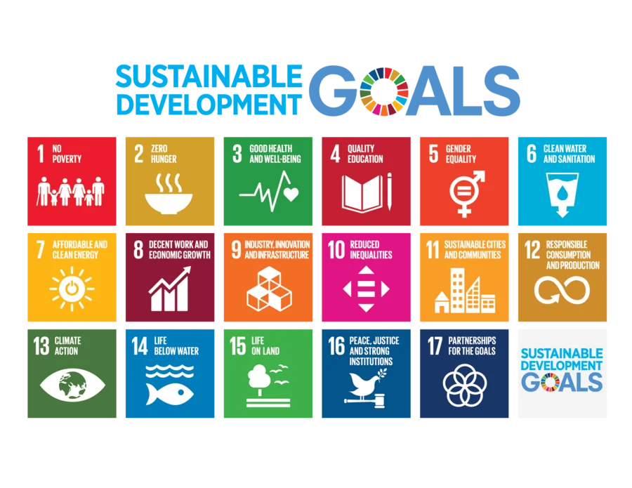
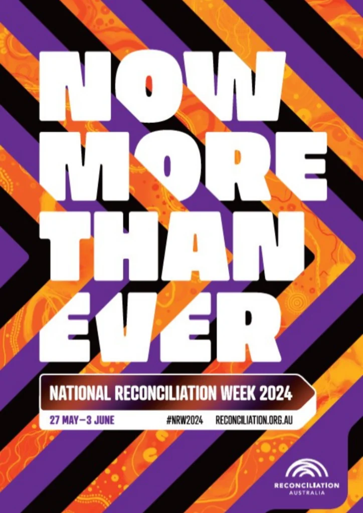
If we think about arguments or fights, making up and getting to know each other and getting on well is reconciliation. Whoever you are, it's important that we all understand what it's like when people don't respect us and don't agree with us just because we are different, but when we get to know each other and listen to one another and don't hurt others just because they are different, we can find out some wonderful things about each other and become friends too.
What can you do to learn about Aborigines and Torres Strait Islanders and understand them better?
If you are Aboriginal or Torres Straits Islander, what can you do to help other people understand you more?
Please tell us with paintings or drawings, words, written or said in a short video.
You can help each other and together we can make Reconciliation happen sooner!
You have the right to feel safe and be safe
Being safe means you are free from people hurting you on purpose, abuse, harassment, treating you badly just because you are different from them, discrimination or doing things to you that are not right, inappropriate behaviour. Feeling safe means you are comfortable in the places where you spend time and trust the adults around you.
You have a right to: be safe and feel safe, whoever you are, wherever you are.
Activities:
Please choose any of these activities, and draw, discuss with a friend or grown up, or write or make a short video about it.
1. Have you ever felt unsafe? What happened?
2.What makes you feel safe?
3. Where is a safe place for you? Why is it safe there?
4. What does it feel like when you are safe?
5. If you don’t feel safe what can you do?
6. What are your suggestions for making life safer for young people?
We all learn from each other and your ideas can help another young person be safe. If you would like to share your drawings/paintings, words or videos, please send here. You can put your name on what you share, but you don’t have to.
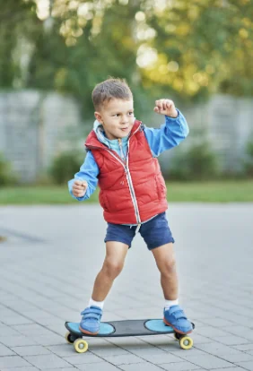
The International Day of Play June 11 every year!
Play
There are so many different ways of playing.
What do you like to do?
Why do you think play is fun?
Is play important?
Please share your ideas about play any way you choose.
How can you tell people that there is an International day of Play?
Can you make some pictures, posters about this for your school, preschool, a library, for home?
Please share here any responses to these things and or any of your thoughts and ideas about play. Do you sometimes think there is no time to play because your family is always so busy. Lots of children and young people feel like this. See if you have this book at home or in a library near you: "Today we have No Plans"
And Or click on here: https://youtu.be/l9jTfIEXkTA
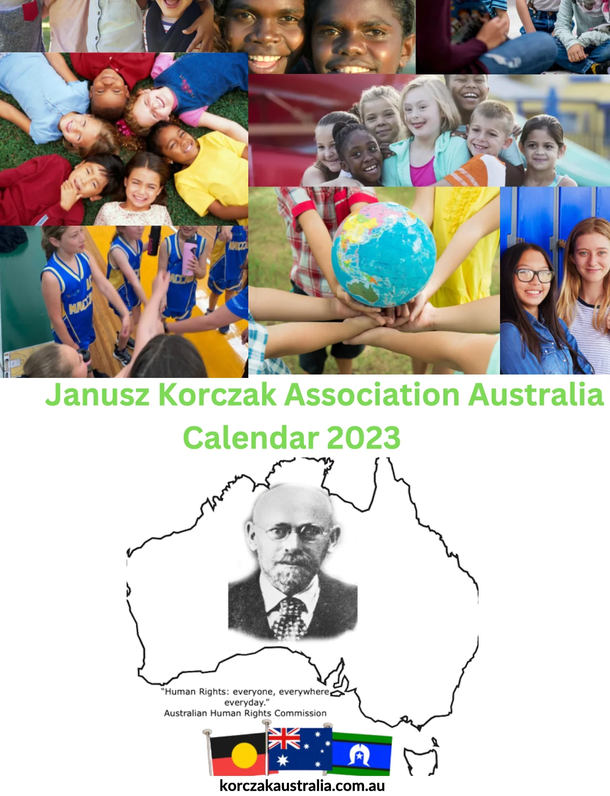
Some dates each year are probably very important to you, and usually to your family too. Together we can create a calendar that includes dates of significance for so many people.
We know and respect that your birthday date is a very important and significant date for you and your family, but unfortunately we can’t include every person’s birthday date in our calendar, but you can make a copy of the calendar you help create and add your birthday and family and friends’ birthdays too. The dates in our Janusz Korczak Association Australian calendar will have dates that are important to groups of people living in Australia. But we do wish you a very happy birthday on your very own special date!
Our calendar for 2023 honours Janusz Korczak, the person who respected all people as equals and whose work and life formed the basis for the United Nations Convention on the Rights of the Child. Our calendar includes photos and words of Janusz Korczak, and the dates important to you that you have submitted). Photos of the children in the orphanage, where he chose to live, will be in our calendar also.
The United Nations Convention on the Rights of the Child gives you the right to live safely and with the freedom to practice your own religion and culture. All children are entitled to their own beliefs and culture and live safe, happy, healthy lives.
Thank you to those who submitted dates and ideas, by doing this, you became a co-creator of the Janusz Korczak Association Australia calendar!
You can see and or download our calendar here.
World Children’s Day 2022. Inclusion, for Every Child!
What Does Inclusion Mean to You?Inclusion, for every child.
Just like our Mums and Dads are important to us always, not just on Mother’s Days and Father’s Days, the theme of each World Children’s Day is important every day too. Just like Mother’s and Father’s Days make us think more about our Mums and Dads and why they are important to us before and on those days. Special days for our parents and themes for World Children’s Day remind us of who and what is important for us all to have better lives.
You have the right to make your voices heard and take actions about these very important matters. Everyone’s lives are busy with different things, so sometimes we don’t realise that we are not doing as much as we want to do about people and things we care a lot about. Celebrating World Children’s Day with actions is a reminder for doing more about the such important things; so not just on that one day do we celebrate these. Thinking about the rights all young people are entitled to helps us all too.
With this year’s theme Inclusion, for Every Child, how do you think it is being celebrated? Is it being celebrated?
Please write, draw, or say on a short video on one or more of the following:
What happens that makes you feel included?
How can you help someone else, or more than one person, feel included?
Create an image about Inclusion For Every Child
Have you ever been excluded? What happened that excluded you or made you feel that way?
If you have been excluded, did you do anything about it afterwards?
Please send suggestions for what could be done when someone is excluded.
What could the excluded person do?
Who or what else could be done to help that excluded person or group?
How can Inclusion For Every Child Be Celebrated?
Please submit your response here
Children have the right to think and believe what they want and to practise their religion, as long as they are not stopping other people from enjoying their rights.
Children have the right to say what they think should happen when adults are making decisions that affect them and to have their opinions taken into account.
Children should be protected from any activities that could harm their development.
Children have the right to get and to share information, as long as the information is not damaging to them or to others.
Children who have any kind of disability should receive special care and support so that they can live a full and independent life.
Children have the right to good quality health care, clean water, nutritious food and a clean environment so that they will stay healthy. Richer countries should help poorer countries achieve this.
Education should develop each child’s personality and talents to the full. It should encourage children to respect their parents, their cultures and other cultures.
Children have the right to relax, play and to join in a wide range of leisure activities.
(Excerpts from the simplified version of the United Nations Convention on the Rights of the Child.)
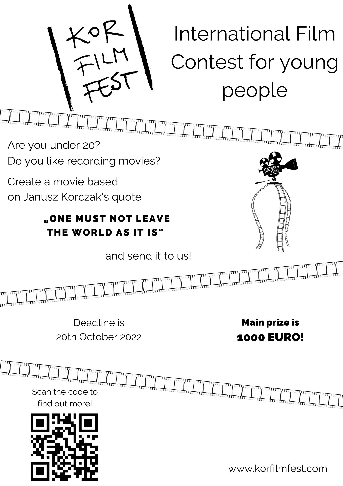
Korczak Film Fest
A new exciting initiative in the Korczak Community is an International Film Festival for young people! How wonderful in the spirit of Korczak, equality and respect, young people in Australia, our pacific neighbours and all over the world are invited to participate by submitting a film and/or viewing this International Film Festival too!
The only age limit is you need to be under 20 years old to submit an entry and the film is to be based on this quote from Korczak: “One must not leave the world as it is.”
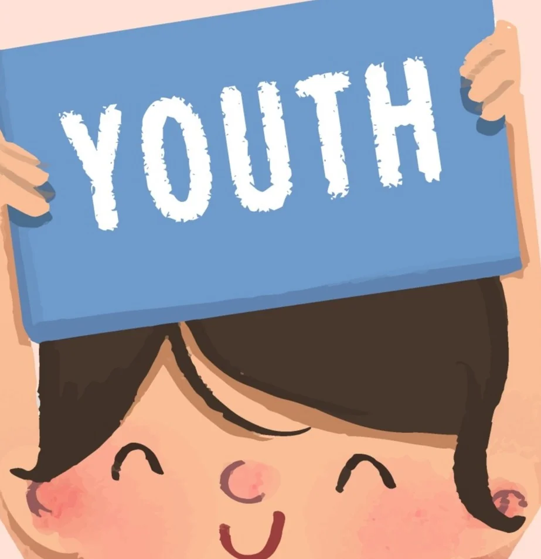
Think about what is very important to you.
Please draw and/or write about this, and also write or say why it is very important to you. You could also ask Mum, Dad or a friend to take a short video of you saying what is very important to you and why it is very important to you.
If you would like to share this with others who are thinking about these things, on this website, please send it to us
HERE
We very much look forward to seeing or hearing about what is very important to you. You are invited to write your name, first name or whole name on your drawing or writing, or say it on your video, but you don't have to.
Please ask Mum, Dad or someone who cares for you if they would like you to share your video, drawing or writing on this website.
On the events page you learned about a special day, International Children’s Day, celebrated in many countries. How would you like to celebrate this day? It could be with songs, paintings, stories, photos or plays, meeting with other children……..
Reggio Emilia, a small town in Northern Italy celebrates children in so many ways every day. Often there are children’s drawings and their words about them in shop windows for everyone to look at. Projects children are creating are often developing in city squares or parks and people of all ages are interested and speak with the children about what they are doing. At the Birth Centenary of Loris Malaguzzi there was an international event focussing on Children's Rights celebrating the life of this wonderful educator who valued children and their rights, and children’s paintings about children’s rights were on banners across the streets too.
Here are some photos of these and also some of the children’s drawings in shop windows. Children are seen as equals in Reggio Emilia and their rights are respected.
The drawings on the Homepage of this website are children’s paintings about things that are important for them. They are on the fences around their school, Port Melbourne Primary school and people passing stop and look at them and think about what children are writing and drawing.
These are all different ways of children sharing their ideas. How would you like to celebrate this day? It could be with songs, paintings, stories, photos or plays, at school, preschool, home or community groups. If you would like to share how you celebrate International Children’s day or how you would like to, please submit this HERE.
Celebrate International Children’s Day!
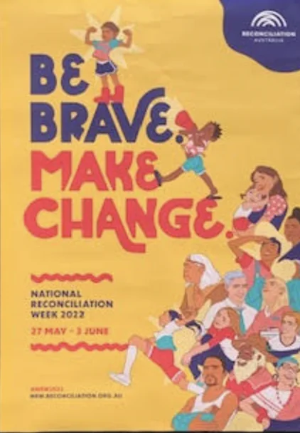
Even three year olds talk about what is fair. How many times have you heard children having a lively discussion say loudly, “That’s not fair!”
Children are never too young to start learning about Reconciliation. It’s not the size of the word that would hold them back. Like many young ones, this little boy and his friends and many other young children, before they were three, could say Tyrannosaurus Rex and point to this particular dinosaur even when it was in a picture with many dinosaurs. It's a lack of understanding what a word means can lead to lack of engagement.
The word and what it means is important. No one is ever too young to learn about and act to make things fair and work things out. It is lifelong learning!
Children putting handprints to create this flag was only one of many activities, to develop understanding about Reconciliation, they were doing before, during, and after both National Reconciliation and NAIDOC weeks.
Whether or not Indigenous or not, we are all equal and all can learn so much from one another.
You can be brave and make a change and or with others make changes too. How could you do this? Think about who you could speak with about this. Are you the same as your best friend? We are all different.
What could you say, questions you could ask, actions could you take to make a change so that people different from you could feel good about who they are? What would help you feel good about yourself when you are with someone different to you?
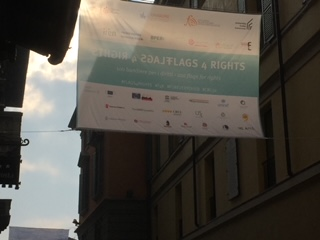
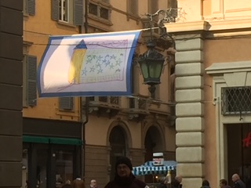
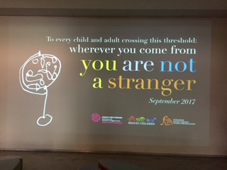
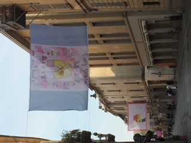
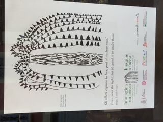
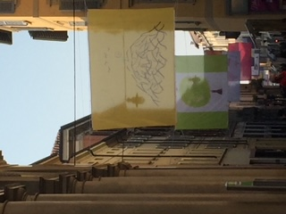
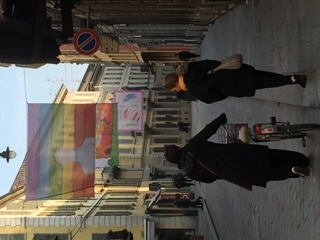
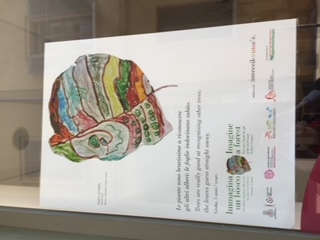